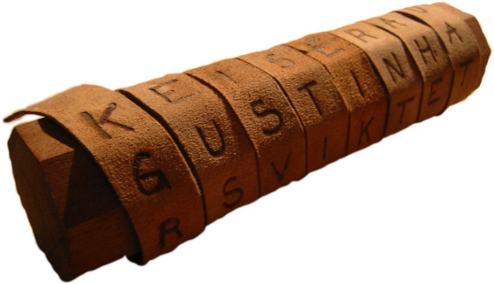
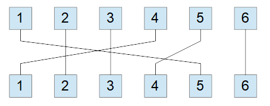
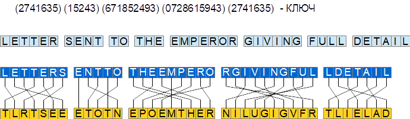
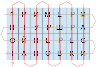
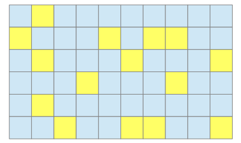

1.2.3. Шифры перестановки
1.2.3. Шифры перестановки
Второй важный класс исторических алгоритмов шифрования − это перестановочные шифры. В них вместо замены символов используется их перестановка на другие места в соответствии с некоторой закономерностью. Очевидно, что алфавит сообщения в этом случае не меняется.
Один из первых шифров, относящихся к классу перестановочных − это шифр «сцитала» (от греческого слова «жезл»), использовавшийся в древней Спарте. Данный шифр использовался в войне Спарты против Афин и описан в сочинениях Плутарха. Сцитала − это устройство шифрования, представляющее собой цилиндр определенного диаметра (рис. 1.5). Для выполнения шифрования вокруг цилиндра плотно наматывалась кожаная полоска или пергамент и по длине цилиндра писалось сообщение. Для расшифрования требовался цилиндр такого же диаметра. Ключом в данном шифре является толщина жезла.

Рис. 1.5. Устройство шифрования "Сцитала"
Устройство для взлома этого шифра было придумано Аристотелем. Оно представляло собой жезл в виде конуса. Сдвигая по нему ленту с сообщением, можно обнаружить, что символы начинают складываться в осмысленный текст. Толщина жезла в этом месте и будет ключом шифрования.
Еще одним перестановочным шифром является табличная перестановка. Например, если используется таблица размером 6 символов, то слово «Москва» с ее помощью будет зашифровано как «КОСВМА» (рис. 1.6). На практике необходимо использовать перестановки большего размера. При этом количество различных вариантов перестановки размером n равно n!. Так как функция факториала растет очень быстро, то методом полного перебора шифры с большой длиной перестановки n взломать не удастся, но при этом, и работать с таблицей большого размера становилось неудобно, ведь шифрование приходилось выполнять вручную.

Рис. 1.6. Шифрующее преобразование перестановочного шифра
Оригинальной модификацией этого шифра пользовался кардинал Ришелье. Она представляла собой шифр перестановки, при котором открытый текст разбивается на отрезки разной длины, а внутри каждого отрезка буквы переставляются в соответствии с фиксированной перестановкой (рис. 1.7).

Рис. 1.7. Перестановочный шифр кардинала Ришелье
К классу перестановочных шифров относится еще один алгоритм, называемый «Маршрутной перестановкой». Принцип работы этого шифра состоит в том, что буквы открытого текста вписываются в некоторую фигуру по одному маршруту, а считываются по-другому. Рассмотрим пример такого шифра — прямоугольник 4*7 в который сообщение вписывается по горизонтали, считывается по вертикали. При этом фраза «ПРИМЕРМАРШРУТНОЙПЕРЕСТАНОВКИ» превращается «МАСИКЕРРЕШРВОЕРМИУПНАЙТРПНОТ» (рис. 1.8). Очевидно, что, зная размер прямоугольника, вскрыть этот шифр не составит труда. Все возможные размеры можно найти методом перебора. Более сложным вариантом этого шифра является перестановка столбцов перед считыванием в соответствии с ключом. Вскрытие такого шифра основано на том свойстве, что в любом языке некоторые комбинации из 3 символов встречаются очень редко, а некоторые не встречаются вообще. Вскрытие такого шифра эквивалентно подбору такого порядка следования столбцов, который не дает запрещенных (редких) комбинаций ни в одной из строк. Маршруты могут быть и более сложными, но использовать такие шифры в ручном режиме становится затруднительно.

Рис. 1.8. Пример маршрутной перестановки
К перестановочным шифрам относится и шифр «Поворотной решетки», описанный в одном из романов Жюля Верна «Матиас Шандор». Суть этого шифра состоит в использовании прямоугольного трафарета клетчатой бумаги размером 2m*2k клеток. В нем вырезаются m*k клеток таким образом, что при наложении его на чистый лист бумаги четырьмя возможными способами он покрывает вырезами всю площадь листа. Буквы сообщения последовательно вписываются в вырезы трафарета в каждом из четырех его положений в заранее установленном порядке. Рассмотрим пример такой решетки размерности 6*10 и шифрующую текст блоками по 60 символов (рис. 1.9).

Рис. 1.9. Пример шифра поворотной решетки
Интересным фактом является то, что так называемая геометрическая перестановка используется в одном из современных шифров, например, в алгоритме AES текст вписывается в квадрат по строкам, а одна из операций, применяемых к нему, оперирует со столбцами этого квадрата.
 Шифрование методом простой перестановки
Шифрование методом простой перестановки